最简单例子图解JVM内存分配和回收
一、简介
JVM采用分代垃圾回收。在JVM的内存空间中把堆空间分为年老代和年轻代。将大量（据说是90%以上）创建了没多久就会消亡的对象存储在年轻代，而年老代中存放生命周期长久的实例对象。年轻代中又被分为Eden区(圣经中的伊甸园)、和两个Survivor区。新的对象分配是首先放在Eden区，Survivor区作为Eden区和Old区的缓冲，在Survivor区的对象经历若干次收集仍然存活的，就会被转移到年老区。
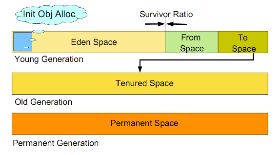
简单讲，就是生命期短的对象放在一起，将少数生命期长的对象放在一起，分别采用不同的回收策略。生命期短的对象回收频率比较高，生命期长的对象采用比较低回收频率，生命期短的对象被尝试回收几次发现还存活，则被移到另外一个地方去存起来。就像现在夏天了，勤劳的douma把doudou和douba常穿的衣服放在顺手的地方，把冬天的衣服打包放在柜子
另一个地方。虽然把doudou的小衣服类比成虚拟机里的对象有点不合适，大致意思应该就是这样。
本文中通过最简单的一个例子来demo下这个过程，代码很短，很简单，希望剖析的细一点，包括每一步操作后对象的分配和回收对内存堆产生的影响。设定上包括对堆中年轻代（年轻代中eden区和survivor区）、年老代大小的设定，以及设置阈值控制年轻代到年老代的晋升。
二、示例代码
下面是最简单的代码，通过代码的每一步的执行来剖析其中的规则。
package com.idouba.jvm.demo;
/**
* @author idouba
* Use shortest code demo jvm allocation, gc, and someting in gc.
*
* In details
* 1) sizing of young generation (eden space，survivor space),old generation.
* 2) allocation in eden space, gc in young generation,
* 3) working with survivor space and with old generation.
*
*/
public class SimpleJVMArg {
/**
* @param args
*/
public static void main(String[] args)
{
demo();
}
/**
* VM arg：-verbose:gc -Xms200M -Xmx200M -Xmn100M -XX:+PrintGCDetails -XX:SurvivorRatio=8 -XX:MaxTenuringThreshold=1 -XX:+PrintTenuringDistribution
* */
@SuppressWarnings("unused")
public static void demo() {
final int tenMB = 10* 1024 * 1024;
byte[] alloc1, alloc2, alloc3;
alloc1 = new byte[tenMB / 5];
alloc2 = new byte[5 * tenMB];
alloc3 = new byte[4 * tenMB];
alloc3 = null;
alloc3 = new byte[6 * tenMB];
}
}
三、执行输出
通过jvm 参数设定几个区域的大小，结合代码执行可以观察到对象在堆上分配和回收的过程。执行参数如下：
-verbose:gc -Xms200M -Xmx200M -Xmn100M -XX:+PrintGCDetails -XX:SurvivorRatio=8 -XX:+PrintTenuringDistribution
通过设这_**-Xms200M -Xmx200M**设置Java堆大小为200M，不可扩展，_**-Xmn100M**_设置其中100M分配给新生代，则200-100=100M，即剩下的100M分配给老年代。-XX:SurvivorRatio=8设置_了新生代中eden与survivor的空间比例是8:1。
执行上述代码结果如下：
[GC [DefNew
Desired survivor size 5242880 bytes, new threshold 15 (max 15)
- age 1: 2237152 bytes, 2237152 total
: 54886K->2184K(92160K), 0.0508477 secs] 54886K->53384K(194560K), 0.0508847 secs] [Times: user=0.03 sys=0.03, real=0.06 secs]
[GC [DefNew
Desired survivor size 5242880 bytes, new threshold 15 (max 15)
- age 2: 2237008 bytes, 2237008 total
: 43144K->2184K(92160K), 0.0028660 secs] 94344K->53384K(194560K), 0.0028957 secs] [Times: user=0.00 sys=0.00, real=0.00 secs]
Heap
def new generation total 92160K, used 65263K [0x1a1d0000, 0x205d0000, 0x205d0000)
eden space 81920K, 77% used [0x1a1d0000, 0x1df69a10, 0x1f1d0000)
from space 10240K, 21% used [0x1f1d0000, 0x1f3f2250, 0x1fbd0000)
to space 10240K, 0% used [0x1fbd0000, 0x1fbd0000, 0x205d0000)
tenured generation total 102400K, used 51200K [0x205d0000, 0x269d0000, 0x269d0000)
the space 102400K, 50% used [0x205d0000, 0x237d0010, 0x237d0200, 0x269d0000)
compacting perm gen total 12288K, used 360K [0x269d0000, 0x275d0000, 0x2a9d0000)
the space 12288K, 2% used [0x269d0000, 0x26a2a3c0, 0x26a2a400, 0x275d0000)
ro space 8192K, 66% used [0x2a9d0000, 0x2af20f10, 0x2af21000, 0x2b1d0000)
rw space 12288K, 52% used [0x2b1d0000, 0x2b8206d0, 0x2b820800, 0x2bdd0000)
从中可以看到eden 大小为81920K, Survivor中from区域和to区域大小都是10240k。新生代总的92160K指的是eden和一个Survivor区域的和。
即原始的内存如图：
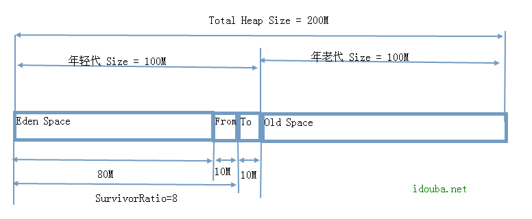
为了演示年轻代对象晋级到年老代的过程。需要设置一个VM参数， 这里设置MaxTenuringThreshold=1。前面不设置的时候，默认MaxTenuringThreshold取值15。当设置不同的阈值，jvm在内存处理会有不同。我们重点观察观察alloc1 这么小块区域在不同的MaxTenuringThreshold参数设置下的遭遇。
这时候JVM的参数中加上MaxTenuringThreshold=1如下：
-verbose:gc -XX:+PrintGCDetails -XX:SurvivorRatio=8 -XX:MaxTenuringThreshold=1 -XX:+PrintTenuringDistribution
可以看到输出结果是：
[GC [DefNew
Desired survivor size 5242880 bytes, new threshold 1 (max 1)
- age 1: 2237152 bytes, 2237152 total
: 54886K->2184K(92160K), 0.0641037 secs] 54886K->53384K(194560K), 0.0641390 secs] [Times: user=0.03 sys=0.03, real=0.06 secs]
[GC [DefNew
Desired survivor size 5242880 bytes, new threshold 1 (max 1)
: 43144K->0K(92160K), 0.0036114 secs] 94344K->53384K(194560K), 0.0036418 secs] [Times: user=0.01 sys=0.00, real=0.01 secs]
Heap
def new generation total 92160K, used 63078K [0x1a1d0000, 0x205d0000, 0x205d0000)
eden space 81920K, 77% used [0x1a1d0000, 0x1df69a10, 0x1f1d0000)
from space 10240K, 0% used [0x1f1d0000, 0x1f1d0000, 0x1fbd0000)
to space 10240K, 0% used [0x1fbd0000, 0x1fbd0000, 0x205d0000)
tenured generation total 102400K, used 53384K [0x205d0000, 0x269d0000, 0x269d0000)
the space 102400K, 52% used [0x205d0000, 0x239f2260, 0x239f2400, 0x269d0000)
compacting perm gen total 12288K, used 360K [0x269d0000, 0x275d0000, 0x2a9d0000)
the space 12288K, 2% used [0x269d0000, 0x26a2a3c0, 0x26a2a400, 0x275d0000)
ro space 8192K, 66% used [0x2a9d0000, 0x2af20f10, 0x2af21000, 0x2b1d0000)
rw space 12288K, 52% used [0x2b1d0000, 0x2b8206d0, 0x2b820800, 0x2bdd0000)
四、过程解析
下面观察每一步语句执行后，jvm内存的变化情况，并给出解析。
1)在执行第一个语句，alloc1分配2M空间
alloc1 = new byte[tenMB / 5];
后，根据分代策略，在新生代的eden区分配2M的空间存储对象。
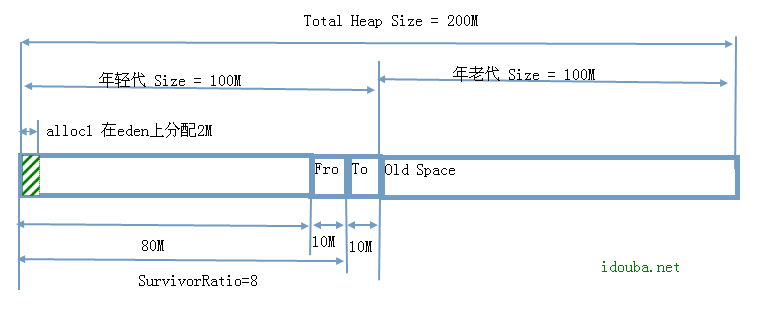
2)在执行第二语句，alloc2分配50M
alloc2 = new byte[5 * tenMB];
前面alloc1分配2M后，因为eden的80M空间还有80-2=78M还可以容纳下allocation2要求的50M空间，因此接着在eden区域分配。
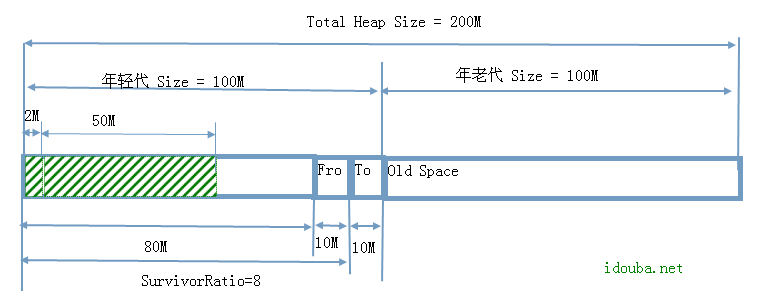
3）当执行第三句，alloc3分配40M
alloc3 = new byte[4 * tenMB];
还是尝试在eden上分配，但是eden空间只剩下28M，不能容纳alloc3要求的40M空间。于是触发在新生代上的一次gc，将Eden区的存活对象转移到Survivor区。在这个里先将2M的alloc1对象存放（其实是copy，参见java 垃圾回收策略的描述）到from区，然后copy 50M的alloc2对象，显然survivor区不能容纳下alloc2对象，该对象被直接copy到年老代。需要说明的是复制到Survivor区的对象在经历一次gc后期对象年龄会被加一。
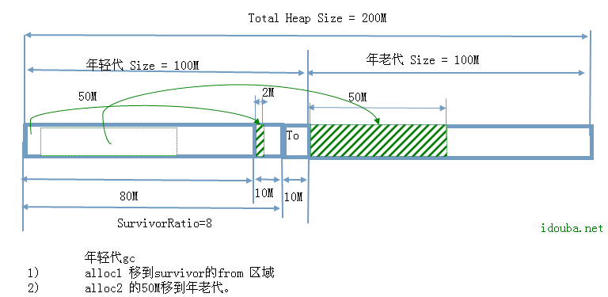
在eden区gc后腾出空间可以存放allocation3的40M对象，则alloc3分配40M对象如图：
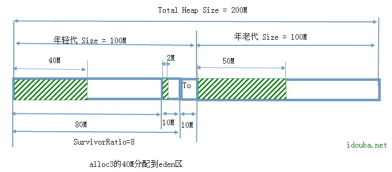
4）执行第四句，将alloc3置空
alloc3 = null;
这是eden上alloc3分配的的40M对象则变成可被回收状态。
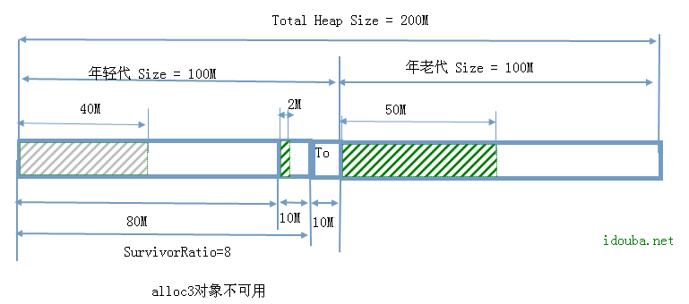
5) 执行第5句，对alloc重新分配60M空间
allocation3 = new byte[6 * tenMB];
还是尝试先在eden区上分配，发现超出了eden区域的容量，则再次触发新生代上的一次gc。首先eden上分配的40M对象因为没有被再使用，则直接被回收。而根据的设置不同，这次gc的行为会稍有不同。
先看MaxTenuringThreshold不设置，即取默认值15的时候。eden区上无用的40M回收后，再考察Survivor区域的对象是否满足对象晋升老年代的年龄阈值，发现from中的2M对象，年龄是1，不满足晋升条件，则不被处理，只是把Survivor区域的经历这次回收未被处理的对象age加一，即新的age为2.如图：
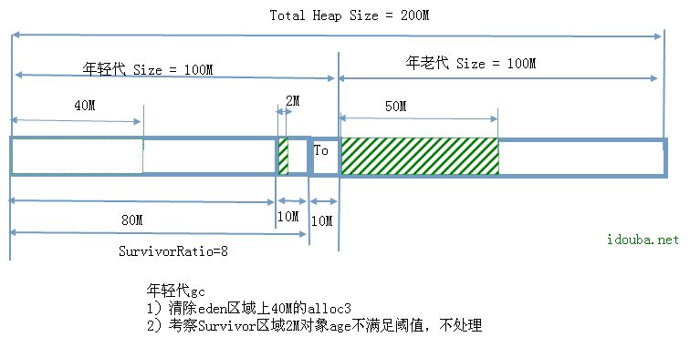
通过输出日志也显示：经过这次回收年轻代大小，由43114K变为2184k，总的大小由94344k变为53384k，即反映出回收了40M无用对象。
Desired survivor size 5242880 bytes, new threshold 15 (max 15)
- age 2: 2237008 bytes, 2237008 total
: 43144K->2184K(92160K), 0.0028660 secs] 94344K->53384K(194560K), 0.0028957 secs] [Times: user=0.00 sys=0.00, real=0.00 secs]
在年轻代上gc后腾出空间后，新的alloc3的60M空间被分配到eden 区域上。分配后堆如下：
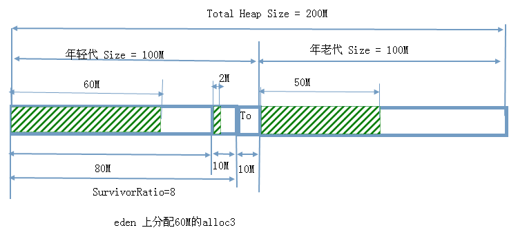
以上是不设置晋升阈值MaxTenuringThreshold情况下进行的gc，以及gc后alloc3的分配。
再看看当MaxTenuringThreshold设置为1的情况。同样eden区上无用的40M回收后，再考察Survivor区域的对象是否满足对象晋升老年代的年龄阈值，发现from中的2M对象，年龄是1，满足晋升条件，则Survivor区域满足年龄的对象被拷贝到年老区。
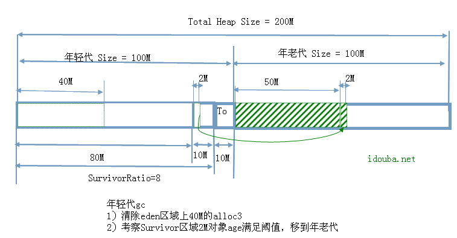
通过日志显示年轻代的大小被清0了，表示survivor的存活对象因为满足晋升条件被移到被移到年老代了。
[GC [DefNew
Desired survivor size 5242880 bytes, new threshold 1 (max 1)
: 43144K->0K(92160K), 0.0036114 secs] 94344K->53384K(194560K), 0.0036418 secs] [Times: user=0.01 sys=0.00, real=0.01 secs]
同样的，gc完后会在eden上分配空间来存储alloc3对象，这种情况下堆结构如图：
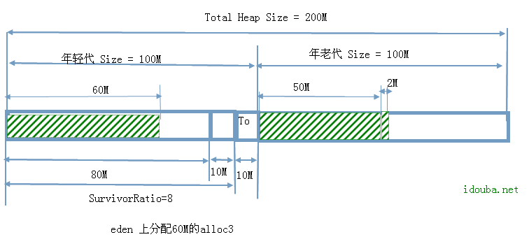
比较上面两个图，发现差别就仅仅在于survivor中的2M对象是否被认为生存时间足够长科院被移到年老代中去。从上面日志高亮部分from区域的最终存储也可反映出了这个差别。
比较前面两个日志可以看到：总的大小和上面设置和不设置MaxTenuringThreshold（其实是MaxTenuringThreshold设置1还是15）没有关系，都是由94344k变为53384k，即都是回收了40M eden区域无用对象。第N次gc时存活的满足晋升条件则由survivor移到年老代，不满足的还留在survivor区域，堆的总的大小没有变。
五、最后
上面通过最简单的例子示意了下在jvm堆上对象是如果分配的，当空间不足时，是如何调整回收的。希望可以对jvm的堆上结构和gc思路有个基本的了解。当然相关参数（其实反映的是机制）远比这个复杂，有挺多细节，更多的是在实践中来体会。
附：主要参数
JVM启动设置的参数很多，可以参照中Java HotSpot VM Options说明。例子中涉及的是最最基础的参数，这里只是对涉及到的几个参数进行说明。
| 参数名称 | 含义 | 默认值 | 说明 |
|---|---|---|---|
| -Xms | 初始堆大小 | 物理内存的1/64(<1GB) | 默认(MinHeapFreeRatio参数可以调整)空余堆内存小于40%时，JVM就会增大堆直到-Xmx的最大限制. |
| -Xmx | 最大堆大小 | 物理内存的1/4(<1GB) | 默认(MaxHeapFreeRatio参数可以调整)空余堆内存大于70%时，JVM会减少堆直到 -Xms的最小限制 |
| -Xmn | 年轻代大小 | 注意：此处的大小是（eden+ 2 survivor space).与jmap -heap中显示的New gen是不同的。 整个堆大小=年轻代大小 + 年老代大小 + 持久代大小. 增大年轻代后,将会减小年老代大小.此值对系统性能影响较大,Sun官方推荐配置为整个堆的3/8 | |
| -XX:SurvivorRatio | Eden区与Survivor区的大小比值 | 设置为8,则两个Survivor区与一个Eden区的比值为2:8,一个Survivor区占整个年轻代的1/10 | |
| -XX:+PrintGC | 开启GC日志打印 | 默认不启用 | 开启GC日志打印。打印格式例如： [Full GC 131115K->7482K(1015808K), 0.1633180 secs] 该选项可通过?com.sun.management.HotSpotDiagnosticMXBean API?和?Jconsole?动态启用。 详见?http://java.sun.com/developer/technicalArticles/J2SE/monitoring/#Heap_Dump |
| -XX:+PrintGCDetails | 打印GC回收的细节。 | 1.4.0引入，默认不启用 | 打印格式例如： [Full GC (System) [Tenured: 0K->2394K(466048K), 0.0624140 secs] 30822K->2394K(518464K), [Perm : 10443K->10443K(16384K)], 0.0625410 secs] [Times: user=0.05 sys=0.01, real=0.06 secs] 该选项可通过?com.sun.management.HotSpotDiagnosticMXBean API?和?Jconsole?动态启用 详见?http://java.sun.com/developer/technicalArticles/J2SE/monitoring/#Heap_Dump |
| XX:+PrintTenuringDistribution | 查看每次minor GC后新的存活周期的阈值 | 打印对象的存活期限信息。打印格式例如： [GC Desired survivor size 4653056 bytes, new threshold 32 (max 32) - age 1: 2330640 bytes, 2330640 total - age 2: 9520 bytes, 2340160 total 204009K->21850K(515200K), 0.1563482 secs] Age1 2表示在第1和2次GC后存活的对象大小。 | |
| -XX:MaxTenuringThreshold | 垃圾最大年龄。Survivor区经过该阈值次回收依然存活的对象会被移到年老代。 | 如果设置为0的话,则年轻代对象不经过Survivor区,直接进入年老代. 对于年老代比较多的应用,可以提高效率.如果将此值设置为一个较大值,则年轻代对象会在Survivor区进行多次复制,这样可以增加对象再年轻代的存活 时间,增加在年轻代即被回收的概率 |
附配图可编辑件：jvm-allocation-and-gc